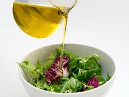
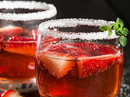
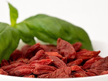

Gute Vorsätzedurchhalten und abnehmen
Die Motivation, endlich die lästigen Kilos der letzten Jahre loszuwerden, ist zum Jahreswechsel groß. Endlich abnehmen und endlich mit einem guten Gefühl dem Frühling entgegengehen! mehr
AbnehmenDiese 5 Fehler sollten Sie vermeiden
Wenn die Temperaturen hoch gehen und die Sommerkleidung noch an der ein oder anderen Stelle zwickt und zwackt, möchten viele Männer und Frauen die ungeliebten Polster in kürzester Zeit los werden. mehr
Wechseljahre.Schlank – egal in welchem Alter.
Der Zorn ist verständlich: Schon ab Mitte 30 sinkt unser Grundumsatz und damit die Menge an Energie, die wir im Ruhezustand verbrennen. Der Grund dafür ist so plausibel wie aus der Zeit gefallen... mehr

Ausgewogene Erfolge. Mit Mischkost schlank werden.
Wer schlank werden und bleiben will, muss seine Ernährung umstellen. Doch das ist leichter gesagt als getan. Es sei denn, man kennt die Umstände, die einen daran hindern wollen. So wie die Teilnehmer der Stoffwechseltherapie von metabolicSlim. mehr
Ran an den Speck. Köln nimmt ab mit metabolicSlim.
„Ich bin froh, dass ich kein Dicker bin“, singt Marius Müller-Westernhagen. Wie viele würden da gerne einstimmen! Doch oft wäre es gelogen. Eine neue Initiative will das ändern und hilft Kölnern jetzt beim Abnehmen. mehr

Bier, Wein, Schnaps. So sehr beeinträchtigt Alkohol das Abnehmen.
„Da kann einer sagen, was er will: Das beste Essen ist immer noch das Trinken“, kalauerte Heinz Erhardt vor einem halben Jahrhundert. Wer sich in Köln so umsieht, hat den Eindruck, diese Stadt pflichte ihm bis heute bei. Pro Monat schluckt man hier mehr als 20 Millionen Liter Kölsch... mehr

Superfoods. Wie gesund sind Chia-Samen, Goji-Beeren und Co. wirklich?
Wer die Ernährungswelt von heute betrachtet, könnte meinen, es gäbe solche Wundersnacks wirklich. Superfoods heißen die ausgefallenen Beeren, Samen und Körner, die aktuell in aller Munde sind. Schön und fit sollen sie machen, jung und natürlich schlank. Aber stimmt das auch? metabolicSlim meldet Zweifel an. mehr
Schlanker urlauben. So sind Sie der Boss am Buffet!
Was bedeutet es, wenn wir einer Versuchung standhalten? Sind wir dann stark? Oder ist die Versuchung zu schwach? Oft wohl Letzteres. Aber es gibt Wochen, in denen die Macht der Verführungskräfte außer Frage steht. Und die sind bekanntlich die schönsten des Jahres: die Urlaubswochen. mehr
Termin-vereinbarung
Unsere Standorte